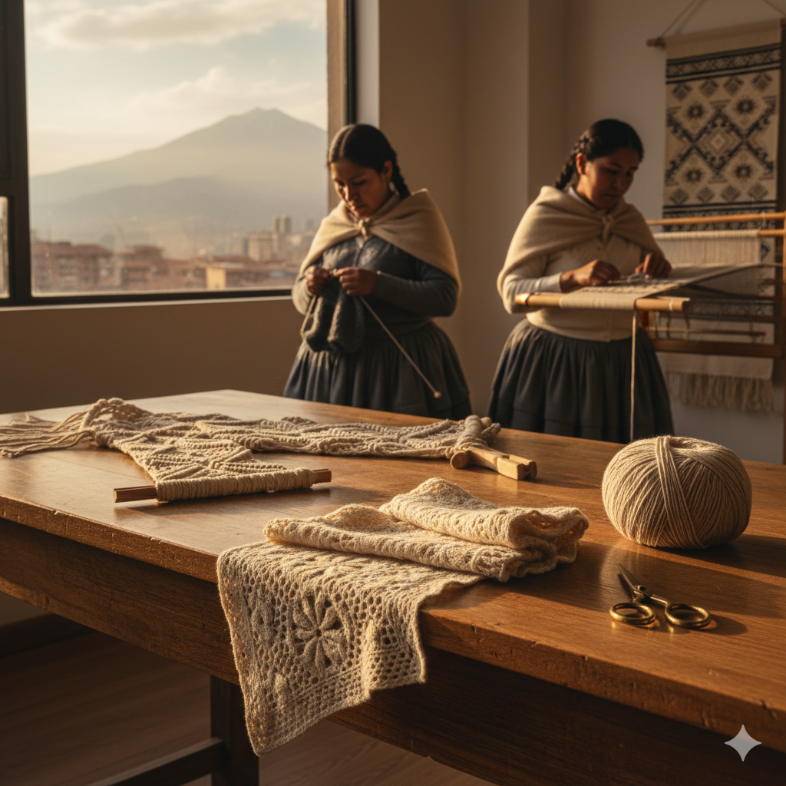
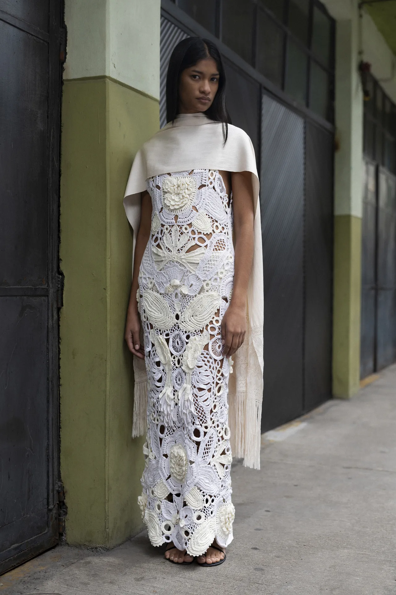
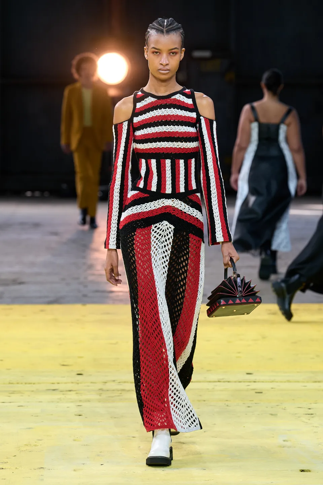

—
FROM OUR HANDS TO THE WORLD

Diseño
Crochet de autor

Confección
Telar tradicional

Acabados
Macramé y detalle

Discover the wide range of handcrafted techniques our artisans are skilled in. We employ up to 100 artisans during peak production seasons, ensuring both capacity and flexibility to meet our clients' needs.
Crochet de autor
Telar tradicional
Macramé y detalle
Madres & Artesanas Tex is an innovative network of women-led cooperatives based in La Paz, Bolivia. Our mission is to empower local women artisans by providing them with sustainable employment opportunities that enhance their skills, financial independence, and self-esteem.
We specialize in the artisan production of contemporary, high-quality handmade knitwear and accessories for private label brands. We utilize traditional textile techniques that celebrate and preserve Bolivian craftsmanship, bringing a piece of our heritage to the global stage.



Interested in collaborating or placing an order? Let's talk.
SEND US A MESSAGE